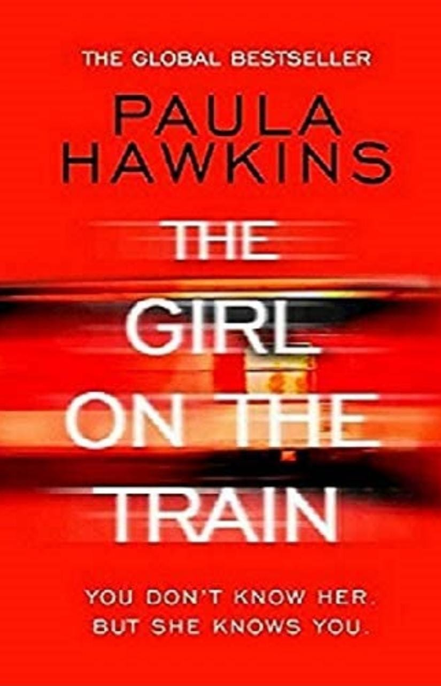
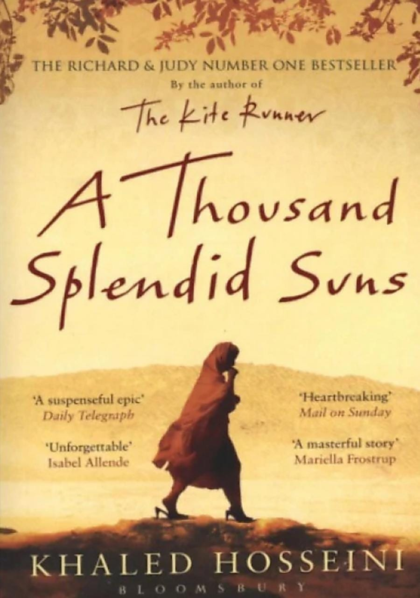
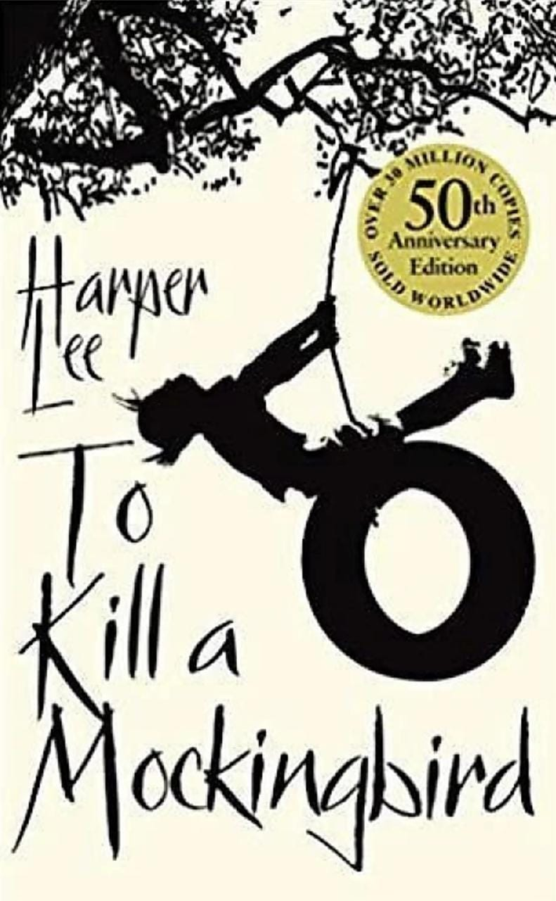

"The psychological thriller that will forever change the way you look at other people's lives."
It's a must read for all! It's thrilling, and it will surely blow your mind.
To be very honest, it's an amazing work by Paula Hawkins! I literally loved it!"

